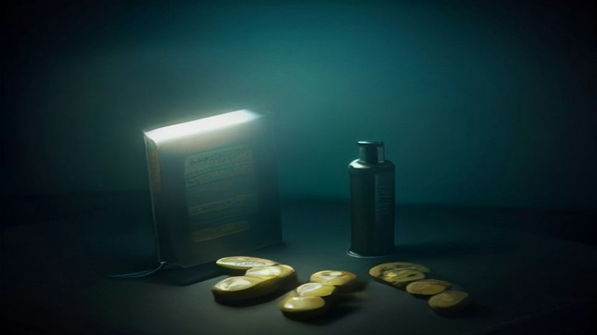
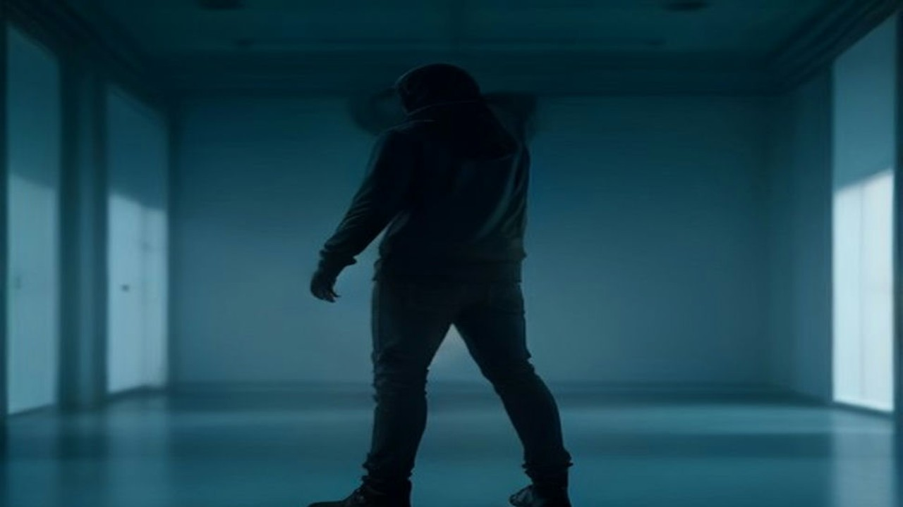
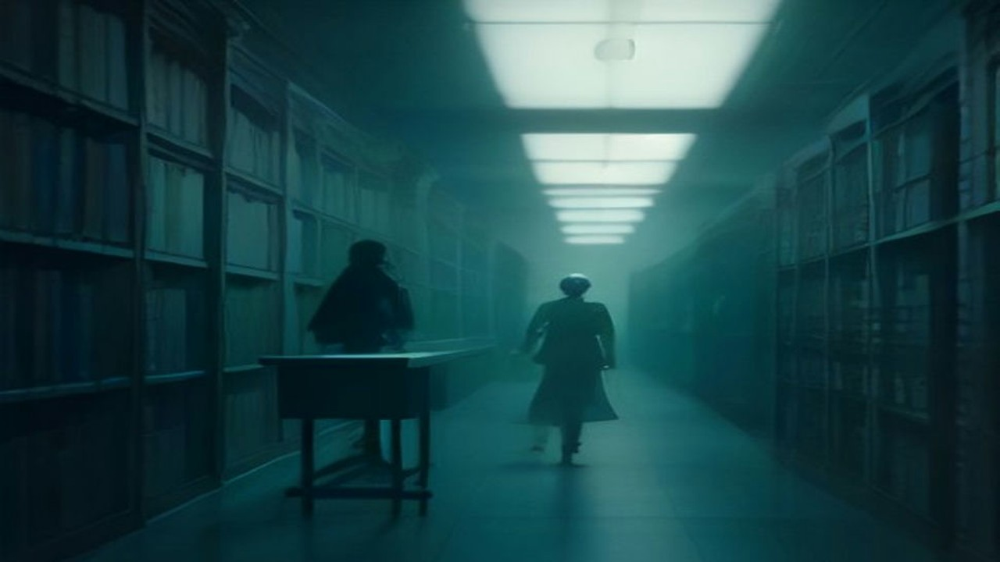
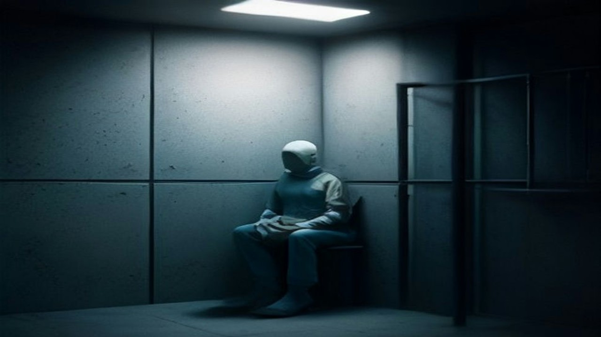
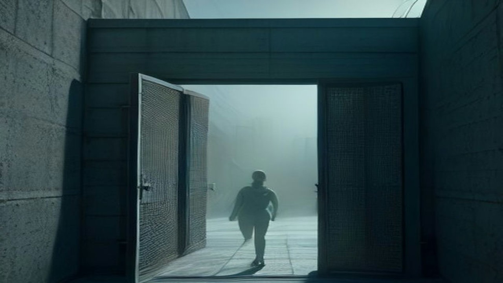
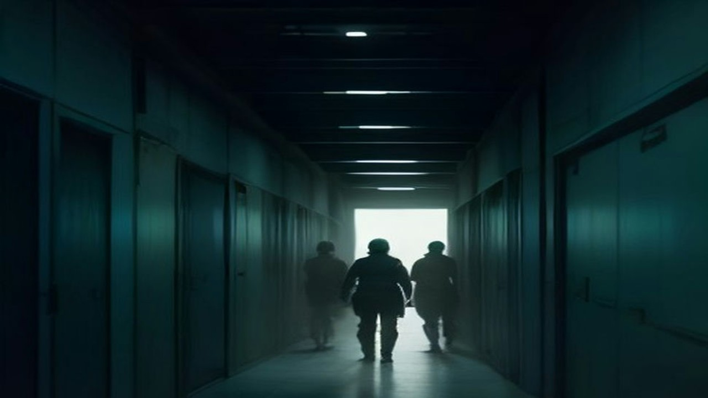

BIBLIOTECA PÚBLICA
Glen Park, San Francisco

MAIS DE
em vendas

DONALD TRUMP
candidato à presidência promete libertá-lo


O SITE ORIGINAL CAIU

VOLUME DE VENDAS
AUGE DA SILK ROAD
2013
MERCADOS ESCUROS
HOJE
Ross Ulbricht
um mercado anônimo
a promessa
infiltrado como moderador do site
San Francisco
sem liberdade condicional
eleição nos EUA
e fora da prisão
SE ESSA VIRADA TE SURPREENDEU
INSCREVA-SE
a guerra nunca parou